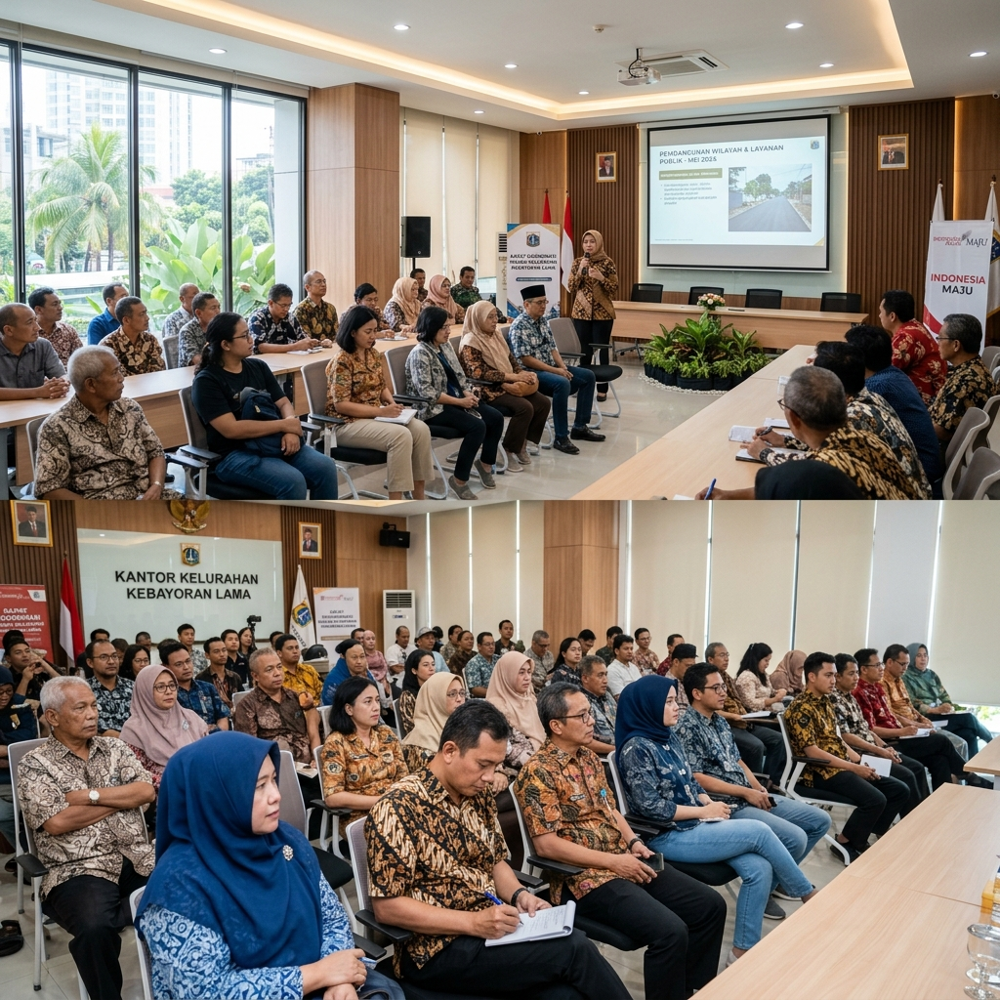

Mewujudkan masyarakat yang sehat, sejahtera, dan mandiri melalui program inovatif SiPintar terintegrasi.
Kenali Lebih JauhKelurahan Bintara Jaya merupakan salah satu kelurahan yang terletak di wilayah administrasi Kota Bekasi. Kami berkomitmen untuk terus meningkatkan pelayanan publik dan kesejahteraan warga.
Dengan semangat gotong royong dan partisipasi aktif dari seluruh lapisan masyarakat, Kelurahan Bintara Jaya terus bergerak maju menjadi lingkungan yang asri, aman, dan berdaya saing tinggi. Kami juga secara konsisten mendukung program-program kesehatan dan sosial, salah satunya adalah pemantauan kesehatan terpadu melalui Posyandu.

Mendigitalisasi data KMS dan riwayat kesehatan balita, lansia, dan warga produktif untuk pemantauan yang lebih akurat.
Memantau kurva pertumbuhan balita dan status gizi secara real-time untuk mencegah stunting sejak dini.
Memberdayakan kader Posyandu dengan alat pencatatan yang efisien sehingga pelayanan kepada warga menjadi lebih maksimal.